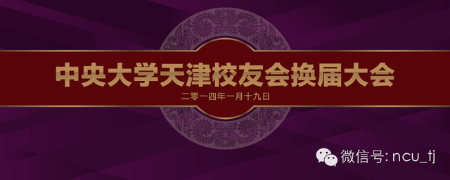
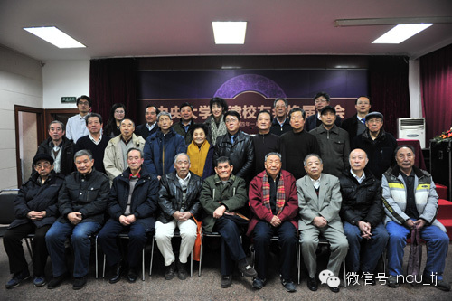
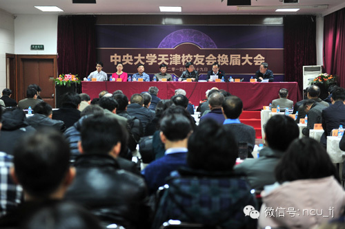
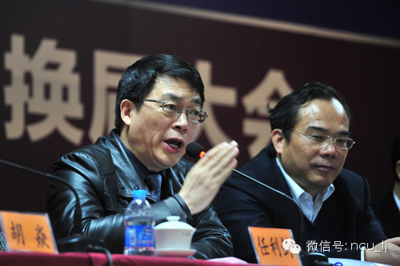
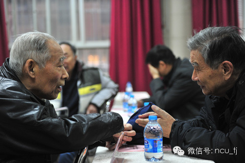
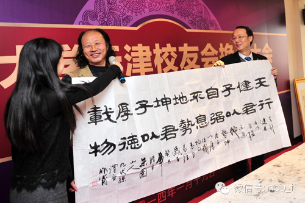
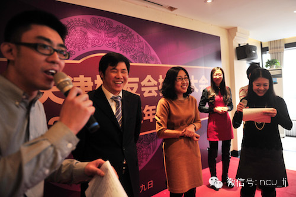

中央大学天津校友会换届大会

血脉相连同甘苦，共襄盛举创未来。
中央大学天津校友会换届大会暨2013年度年会1月19日在天津江西大厦成功召开。中央大学系各高校的在津校友，包括中央大学、金陵大学、东南大学、南京农业大学、南京师范大学、江南大学的23位在津老校友代表，和南京大学、东南大学、南京农业大学、南京师范大学的校方代表以及中央大学、南京大学京、沪、苏、鲁、陕、闽、浙、吉、云、台湾以及美国的校会友代表出席了本次会议。清华大学、北京大学、浙江大学、中国人民大学、复旦大学、北洋大学（天津大学）、西安交大、哈军工-国防科大、哈尔滨工程大学、南京理工大学、江苏大学、重庆交通大学天津校友会以及天津市欧美同学会的代表也获邀出席大会。
会议首先由中央大学天津校友会第五届理事会会长陆文龙作工作报告，第五届理事会秘书长洪和耕作财务报告，随后通过举手表决的方式，选举了中央大学天津校友会新一届理事会、会长、副会长及秘书长。新一届理事会由28位理事组成，毕业于南京大学的陆海枫当选中央大学天津校友会第六届理事会会长。他在发言中表示，新一届理事会将加强组织建设，充分发挥校友会桥梁和纽带作用；加强多方联系与交流，推动校友会的工作和谐健康发展；勇于探索不断创新，努力使校友会工作再上新水平；“将竭尽全力，为校友会和学校的发展做出自己应有的贡献。”
南京大学党委副书记、南京大学校友总会副会长任利剑对新当选的会长、理事表示祝贺，同时希望天津校友会能发挥宣言书、宣传队、收获机的作用，彰显母校光辉形象。东南大学校友总会秘书长胡焱表示中央大学的精神源远流长，中央大学系各高校一脉相承，希望天津校友会将中大精神一直延续下去，成为中大系校友感情、发展、合作、展示的平台。南京农业大学发展委员会办公室主任张海彬表示中央大学天津校友会取得了很大的成就，预祝今后做出更好的成绩。南京师范大学校友会处副处长开云希望随着年轻校会的不断加入，中央大学的血脉能继续传承，中大精神能发扬光大。
换届大会结束，举行了中央大学天津校友会2013年度年会，会上各地校友会和在津兄弟高校校友会向天津校友会换届成功表示祝贺，并赠送礼物。年会在轻松欢快的气氛中结束。
 欢迎留言，申请加入微信群进行讨论。
官方网站 www.ncutj.org